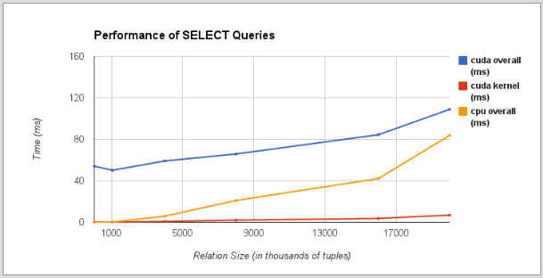

I'm a programmer with a love for art trying to find my passion. As a rising senior at Carnegie Mellon University studying Computer Science, I have had amazing opportunities and experiences, like interning at Amazon and Apple for the past two summers. I am also pursuing minors in Business Administration and Human-Computer Interaction to fulfill my desire to combine technology, beautiful design,a nd business in every aspect of my life.
I've learned a lot about myself and my passions not only through education, but also through CMU Bhangra, a dance team that has been a part of my entire college career and where I am one of the incoming captains, and Delta Gamma, a sorority that has allowed to grow and meet some of the most amazing women. I love my friends, family and food, and if you like what you see, feel free to contact me!
MasterChef
October 2012
Languages
HTML, CSS, PHP, SQLSDKs
Facebook and ParseDescription
I partnered with three friends for our first hackathon, the Facebook Pittsburgh Hackathon, to create a web application that helps people decide what to make with the ingredients they have. We attempted to simulate a pantry and scraped recipes from the web. With an algorithm ranking different types of ingredients, we recommended recipes to users. Finally, we attempted to add a social aspect by letting users share recipes with Facebook friends and earn badges.
Deliverables
Teammates
Tyler Hedrick, Stephanie Yeung, and Samaan Ghani
Lien

February 2013
Languages
Objective C, SQL, HTML, CSSSDKs
Facebook and Parse SDKsDescription
For our second hacakthon, TartanHacks, we decided to tackle a native iOS application. We wanted an app that would allow us to find nearby friends and make spontaneous plans with them. Thus, Lien was born. This application connects to your Facebook account and displays a newsfeed of all events that you and your friends are planning. You can choose to join or leave events, invite friends to events, and filter your newsfeed by time, distance, or category.
Teammates
Tyler Hedrick, Stephanie Yeung, and Samaan Ghani
Flippo
Spring 2013
Languages
HTML, CSS, Javascript, SQLSDKs
Parse SDKDescription
We were approached at TartanHacks by a group of Pitt students who were working on their startup, Flippo. Flippo is a service provided on college campuses for students to ask or do tasks from other students for a small fee. We agreed to build their first mobile app prototype. The app allowed users to login or signup, view tasks by map or list view, submit a task to be done, and view their history.
Deliverables
Not yet released!
Teammates
The Flippo Team, Tyler Hedrick, Stephanie Yeung, and Samaan Ghani
Night Light
Spring 2013
Languages
Arduino CodeDescription
I got the pleasure to work with my friend (and little!) on one of her industrial design projects. She built a nightlight with in-built Arduino lights on a strip. She wanted the light to move down the strip, while slowing down and becoming dimmer, eventually turning off. I wrote the code for the light to slow and dim, and helped her with her nightlight project.
Deliverables
Physical prototype
Teammates
SocialTraveler
Spring 2013
Languages
HTML, CSS, Javascript, SQLSDKs
Facebook and Parse SDKsDescription
As part of a Human-Computer Interaction class, I worked with a team of students to develop an idea, discuss the specifications, design the interfaces, run user tests for lo-fi and hi-fi prototypes, and create the final prototype. This project turned into SocialTraveler, a web application to help users plan trips with their friends and family in a social environment and easy-to-use UI.
Deliverables
Teammates
Meghna Raghunathan, Folashade Okunubi, Junki Nakayama, Justina Eng
CMU Bhangra Website
Spring 2013
Languages
HTML, CSS, JavascriptDescription
For the final project of the class, Publishing on the WWW, I decided to work on a new design for my dance team, CMU Bhangra. I created lo-fi prototypes of different pages of the website and experimented with including different JavaScript consoles such as live Twitter updates, an automatic slideshow, and a contact form. I created a simpler and more informative website that had all of the team's updated information, videos, and pictures, and didn't look to bad either! This was simply a prototype website that has not yet gone into production, but it was fun to merge my interest in dance with my interest in web design.
Deliverables
GPU vs. CPU SQL Queries

Spring 2013
Languages
C, C++, OpenMP, CUDADescription
Last spring, I took an interesting class on parallel computer architecture. For our final project, my teammate and I decided to look into the benefits of running SQL queries on the CPU versus the GPU. We simulated queries such as SELECT and JOIN on the CPU and GPU using relational algebra algorithms and by implementing SIMD parallelism and pipelining. We conducted a few studies on the queries with different sizes of data sets, and found that the performance of queries depended on the query complexity and the size of the tables, as well as the amount of parallelization implemented in the GPU and CPU. Although we weren't able to conduct a thorough analysis of all query types, we predict that the most efficient query optimization would occur when work that requires minimal data accesses is offloaded to the GPU.